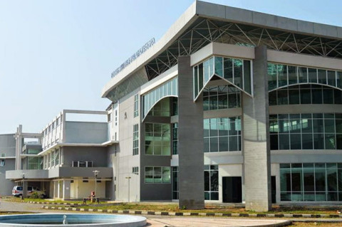

MedicGIS
MedicGIS Navigate
Health, Access Faster
Jenis Fasilitas Kesehatan
Semua
Rumah Sakit
Klinik
Puskesmas
Apotek
Laboratorium

RS Nasional Diponegoro
Buka 24 Jam
4.5
(10)
2.3 KM
RS Nasional Diponegoro
Buka 24 Jam
4.5
(10)
2.3 KM
RS Nasional Diponegoro
Buka 24 Jam
4.5
(10)
2.3 KM